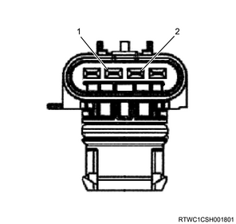
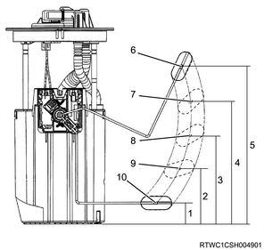

1. Connect the filler neck to the fuel tank.
Note
2. Remove the cap from the breather.
3. Install the hose to the fuel tank unit.
Note
4. Install the fuel filler cap to the filler neck.
Note
5. Apply soapy water to the seal.
Note
Standard： 34.3 kPa { 0.35 kgf/cm2 / 5 psi }
Note
1. Inspect the fuel tank unit.
Note


| Float position | Distance | Actual capacity | Resistance value |
| Point F | ： 185.7 mm { 7.311 in } | ： 62.3 L { 13.70 Imp.gal / 16.46 US gal } | ： 14 to 20 Ω |
| 3/4 | ： 148.5 mm { 5.846 in } | ： 47.0 L { 10.34 Imp.gal / 12.42 US gal } | ： 31.25 to 37.25 Ω |
| 1/2 | ： 116.6 mm { 4.591 in } | ： 32.8 L { 7.22 Imp.gal / 8.66 US gal } | ： 42 to 48 Ω |
| 1/4 | ： 85.9 mm { 3.382 in } | ： 19.4 L { 4.27 Imp.gal / 5.12 US gal } | ： 69.75 to 77.75 Ω |
| Point E | ： 33.3 mm { 1.311 in } | ： 5.4 L { 1.19 Imp.gal / 1.43 US gal } | ： 140 Ω or more |
Note